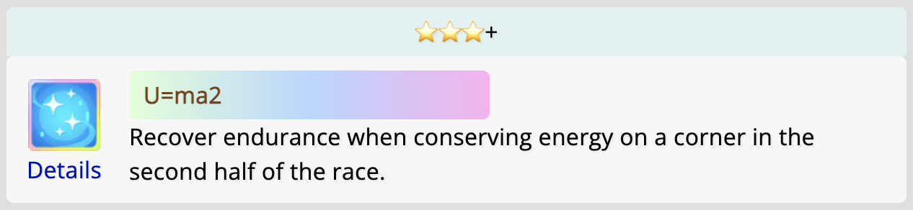

Агнес Такион (13 апреля 1998 – 22 июня 2009) — японская чистокровная скаковая лошадь.
Среди его главных побед — "Сацукишоу", "Хоупфул Стэйкс" и "Яйойшоу". Он участвовал в скачках, не
проигрывая, с 2000 по 2001 год, когда из-за повреждения сухожилия его гоночная карьера закончилась.
Он известен за то, что поучаствовал лишь в четырёх гонках, но занял первое место в каждой из них.
Люди называли его "призрачным обладателем тройной короны", потому что он так и не смог поучаствовать в
ещё одной гонке категории G1, хоть и являлся претендентом на победу.
Имя на японском: アグネスタキオキオン
Происхождение имени:
Агнес (Agnes) - название клана. Это название клана произошло от имени гонконгской певицы Агнес Чан. Агнес Чан - любимая певица дочери владельца лошади.
Такион (Tachyon): Тахион - это "гипотетическая частица, которая движется быстрее света".
История гонок: [4-0-0-0], в том числе:
Радио Танпа Хай Сансай Стэйкс 2000 (G3), победил Джангл Покет и Курофуне с разницей в 2,5 длины.
Яйойшоу (G2), победил Борн Кинг и Манхеттен Кафе с разницей в 5 длин.
В свое время все боялись состязаться с Агнес Такион, и не без оснований: он был очень силен.
В игре это передали, сделав Агнес Такион таинственным безумным ученым.
Настоящий Агнес Такион родился с дегенеративным заболеванием ног, которое в настоящее время не
поддается лечению. Поэтому её цель в игре - найти это лекарство, и именно поэтому она проводит
так много времени за исследованиями и экспериментами.
Как и Фудзи Кисеки, настоящий Агнес Такион был известен как обладатель "призрачный тройной короны"
своего времени. В игре Агнес Такион может принять участие в гонке "тройная корона", но если после
"Сацукишоу" у нее будет плохое настроение, цель ее забега изменится на "Кубок NHK". Это основано на
том, что Сацукишоу стал последней гонкой настоящего Агнес Такион.
Среди первых четырёх целей в режиме карьеры Агнес Такион в игре 2 гонки категории G1. Начиная с
пятой, всеми целями являются участие в разных гонках категории G1, являясь отсылкой на "третью корону",
ещё одну победу в категории G1, которую настоящий Агнес Такион так и не смог получить.
Слова комментатора при победе Агнес Такион на Сацукишоу в игре в точности повторяют слова
комментатора Цунэо Сиобары во время победы настоящего Агнес Такион на Сацукишоу 2001.
Настоящий Агнес Такион также терпеть не мог, когда его оставляли одного, и он плакал, требуя, чтобы
кто-нибудь составил ему компанию.
Это похоже на его версию в игре. Из-за того, что она тратит слишком много энергии
на эксперименты, она часто теряет сознание, если никто не помогал ей с ее повседневными
потребностями. Поэтому в игре эту роль берет на себя игрок.
Все побочные эффекты в экспериментах Агнес Такион в игре связаны с ногами, напоминая о
слабых ногах настоящего Агнес Такион.
Название специального навыка Агнес Такион в игре — "U=ma2", что является отсылкой к
уравнению эквивалентности массы и энергии Альберта Эйнштейна, E=mc2.

Навык Агнес Такион
Факты об альтернативном костюме Агнес Такион:
Лента на её костюме может быть лакмусовой бумажкой (научным инструментом для измерения кислотности
и щелочности основы), а также может указывать на Джангл Покет (желтый), Манхеттен Кафе
(черный) и Данцу Флэйм (розовый), являвшимися соперниками настоящего Агнес Такион, над которыми он
одержал победу.
Так выглядит её анимация выпадения в гаче в этом костюме:
Эта анимация была вдохновлена этим видео:
В игре один из двух секретов Агнес Такион гласит: "Она постоянно получает посылки из-за рубежа".
Это может быть отсылкой на всех других лошадей клана Агнес, такие как Агнес Диджитал
и Агнес Ворлд, и их международные победы.